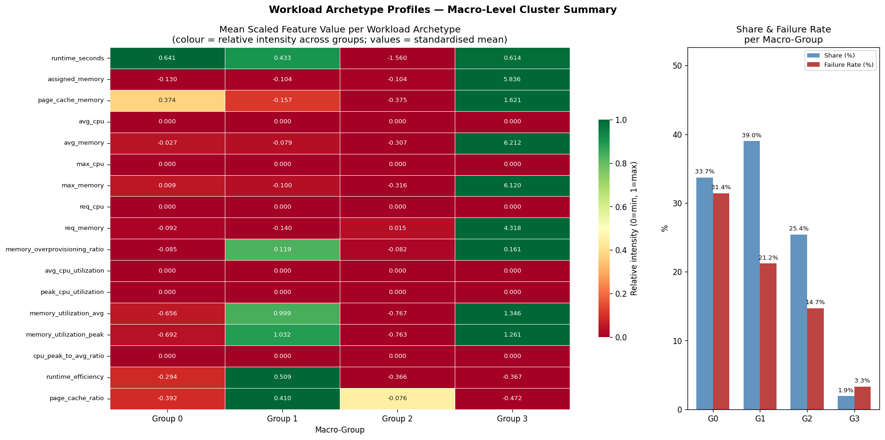

Unsupervised Workload Archetype Discovery on Google Borg Cluster Traces
Applied HDBSCAN and KMeans in a two-stage pipeline to cluster 405,894 workload instances from Google's 2019 Borg trace data - surfacing 4 operationally distinct archetypes across memory utilisation, overprovisioning, and runtime efficiency dimensions. Achieves a Silhouette Score of 0.874 with an ARI of 0.9975 ± 0.0006 across stability runs, translating cluster findings directly into scheduling, bin-packing, and memory reclamation recommendations for infrastructure teams.
Google runs massive data centres with hundreds of thousands of computing tasks running at the same time. These tasks - called workloads - vary enormously: some run for a long time, some are short bursts, some use a lot of memory, some barely use any.
The problem is that most infrastructure systems treat every workload the same way, allocating the same resources and applying the same scheduling rules regardless of how the task actually behaves. This leads to wasted memory, unnecessary failures, and inefficient use of expensive hardware.
This project uses unsupervised machine learning (clustering) to automatically discover what types of workloads exist - without anyone labelling them manually. The algorithm reads resource usage patterns and finds natural groupings on its own. The result: 4 clearly distinct workload archetypes, each with its own failure risk and resource profile, and concrete recommendations for how each type should be handled differently.
Real computing tasks analysed
From Google's Borg cluster, 2019. 30% random sample (121,535 rows) used for modelling.
Distinct workload archetypes discovered
Found automatically via unsupervised clustering - no manual labelling.
Silhouette Score - group quality
Measures cohesion and separation of clusters. Range: -1 to 1. Above 0.6 is excellent; 1.0 is perfect.
Stability across repeated runs (ARI)
Adjusted Rand Index = 0.9975 ± 0.0006 across 5 sub-sample runs. The same 4 archetypes emerge consistently.
Imagine assigning every employee in a company the same desk, the same computer, and the same amount of office space - regardless of whether they are a graphic designer rendering 4K video or an accountant updating a spreadsheet. The designer would be constantly struggling; the accountant would have resources sitting idle all day. That is essentially what happens inside large compute clusters when every task is treated identically.
Any organisation running large-scale compute infrastructure - whether on-premises, in the cloud (AWS, Azure, GCP), or via container orchestration platforms like Kubernetes - faces the same challenge. Hundreds of thousands of tasks compete for the same pool of servers: machine learning training jobs, web-serving requests, batch analytics, ETL pipelines, and database queries all run side by side. The infrastructure, by default, cannot tell them apart. Every task gets allocated memory and scheduled by the same rules, regardless of whether it actually needs them. The result is a cluster that is simultaneously over-committed in some places and wastefully idle in others.
This project uses Google's Borg cluster trace - one of the largest publicly available real-world infrastructure datasets - as a concrete, quantified case study of this universal problem. The findings and methodology apply equally to any comparable compute environment.
The dataset comes from Google's Borg system - the internal cluster manager that schedules and runs tasks across Google's data centres. The 2019 trace records what actually happened: how much memory each task used, how long it ran, whether it failed, and more.
To keep things computationally manageable, a random 30% sample of 121,535 records was used for modelling. On top of the 9 raw measurements already in the data, 8 new derived features were engineered to better capture how efficiently each task uses its resources:
(assigned_memory / req_memory) - how much memory was allocated compared to how much was actually requested. High values mean the task was given far more than it asked for.(avg_memory / assigned_memory) - out of all the memory allocated, how much was actually used on average during the task's lifetime.(max_memory / assigned_memory) - the highest memory usage recorded at any point during the task, as a fraction of what was allocated.(avg_cpu / assigned_memory) - average CPU usage relative to what was allocated. (This turned out to carry no discriminative signal - see Key Findings.)(max_cpu / assigned_memory) - the highest CPU usage recorded, relative to allocation. (Also zero signal.)(max_cpu / avg_cpu) - how much the CPU usage varied; whether the task had sudden spikes or ran steadily.(runtime_seconds / assigned_memory) - how long the task ran relative to how much memory it used. Helps distinguish long-running tasks from short ones with similar memory usage.(page_cache_memory / assigned_memory) - how much memory was used for file caching, which indicates how heavily the task reads from disk (I/O intensity proxy).
All 17 features (9 raw + 8 derived) were standardised using StandardScaler
so that no single large number would dominate distance calculations. Principal Component
Analysis (PCA) confirmed that memory scale is the primary axis of variation
- PC1 (33% of variance explained) is driven entirely by memory features, with PC2 (21%)
capturing utilisation efficiency.
Six different algorithms were tested and compared. Two simple "baseline" approaches were run first to set a minimum bar - any serious model had to be meaningfully better than these. Four more sophisticated models were then evaluated on the same data using four quality measures.
The key quality measures used:
The modelling algorithms used:
(eps=0.203, min_samples=10) - a density-based spatial clustering algorithm that finds groups without needing to specify how many groups to look for. Used here mainly to validate results from HDBSCAN.(min_cluster_size=50, min_samples=10) - Hierarchical Density-Based Spatial Clustering of Applications with Noise. A more advanced version of DBSCAN that handles groups of varying density and size, and identifies genuine outliers as noise. Selected as the primary model.
The final pipeline combined two models: HDBSCAN (mcs=50, ms=10) first found
617 micro-clusters, then KMeans nearest-centroid assignment consolidated those into 4
macro-level archetypes for business recommendations. Stability was validated by re-running
the full pipeline 5 times on different random 80% sub-samples - the same 4 archetypes
appeared consistently, with an Adjusted Rand Index (ARI) of 0.9975 ± 0.0006.
The table below shows the results for all 6 models. Higher Silhouette and lower Davies-Bouldin both mean better, more clearly separated groups. The highlighted row is the chosen model.
| Model | Groups Found | Silhouette Score ↑ | Davies-Bouldin ↓ | Verdict |
|---|---|---|---|---|
HDBSCAN mcs=50, ms=10 |
617 micro-clusters → 4 archetypes | 0.874 | 0.488 | ✅ Primary model |
DBSCAN eps=0.203, ms=10 |
687 | 0.493 | 0.508 | Secondary - validates HDBSCAN |
KMeans k=4 |
4 | 0.303 | 1.127 | Macro labelling only |
GMM k=40 |
40 | 0.142 | 2.070 | ❌ Eliminated - unstable ARI |
| Runtime Quantile (6 bins, baseline) | 6 | 0.041 | 93.09 | Baseline - very poor |
Single Cluster k=1 (baseline) |
1 | - | - | Baseline - no grouping |
HDBSCAN is significantly better than every other model on every measure, and is the only one that produces the same groupings reliably across repeated runs (99.75% consistency). GMM was eliminated because its group labels changed unpredictably - a fundamental problem for any model intended to be used in practice.

Each row is a measured feature; each column is one of the 4 workload types. Green means high, red means low. Notice the CPU rows are completely grey - they carry no signal. The right chart shows how large each group is and how often tasks in it fail.
The machine learning model found 617 fine-grained natural groupings in the data. These were then consolidated into 4 broad types for practical use. Each type has a meaningfully different failure rate, memory usage pattern, and infrastructure implication.
These tasks run for a long time but consistently use far less memory than they were given - below-average memory utilisation despite above-average runtime. The allocated memory sits idle for most of the task's lifetime. Despite this over-provisioning, they fail most often.
The largest group. These tasks use almost exactly as much memory as they were given -
very little is wasted (high memory_utilization_avg, ~+1.0 SD). They occasionally
have spikes in disk-read activity (elevated page_cache_ratio).
Quick tasks with a small memory footprint. They are the most predictable and consistent group - lowest noise fraction (7.4%) of all archetypes. Their behaviour barely varies from task to task, making them preemption-tolerant.
Rare but critical. These tasks use enormous amounts of memory - +5.8 standard deviations above the dataset mean - yet they almost never fail. With only 6 micro-clusters, they are clearly receiving dedicated, carefully managed infrastructure.
avg_cpu, max_cpu, req_cpu,
avg_cpu_utilization, peak_cpu_utilization, cpu_peak_to_avg_ratio)
show a mean z-score of 0.000 across all four archetypes - confirmed by both PCA and
the feature heatmap. Memory is the sole primary resource dimension. Any CPU-based
autoscaling or scheduling model built on this dataset would have nothing to work with.
memory_utilization_avg despite above-average
runtime (classic over-provisioning pattern), yet carries the highest failure rate
(31.4%). Resource slack is not preventing failures. The right intervention is memory
reclamation - reducing assigned_memory toward actual avg_memory
- not further provisioning.
assigned_memory and
avg_memory both ~+5.8 SD above the dataset mean, yet the lowest failure
rate (3.3%). This pattern is consistent with dedicated node pool placement and no
preemption - an approach that should be formalised and protected.
Specific actions for infrastructure teams based on these findings:
assigned_memory toward actual
avg_memory to recover significant cluster capacity. Flag for offer-back
mechanisms. Prioritise failure alerting and retry policies over further provisioning;
resource slack is not preventing failures.
memory_utilization_avg (+1.0 SD) means these workloads fill their
allocation without leaving slack. Account for I/O burst events when co-scheduling
(above-average page_cache_ratio).
What to build next:
avg_memory, max_memory) unavailable at submission time.
The follow-on project is a supervised classifier trained on the archetype labels
using only submission-time features (req_memory,
assigned_memory, priority). This would enable real-time scheduling
decisions via a Kubernetes mutating admission webhook or equivalent.
assigned_memory and avg_memory
across all Group 0 workloads and convert to a concrete capacity figure (e.g.
terabytes recoverable per day). This turns the model findings into a direct
cost-saving business case.
StandardScaler, KMeans, PCA, silhouette score, Davies-Bouldin index, Calinski-Harabasz score, Adjusted Rand IndexHDBSCAN with min_cluster_size=50, min_samples=10)plots/) and interactive charts in the Streamlit appKMeans and StandardScaler saved to deployment/ for use in the live appEverything is open-source and publicly available: